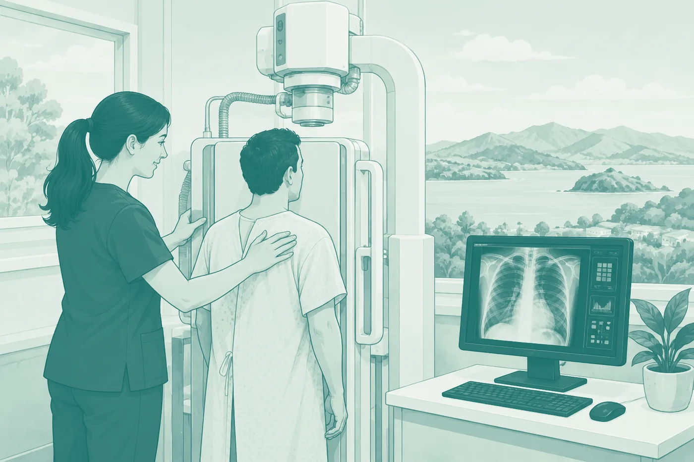

Stage 03 · Can I work there? · Medical Radiation Technologists Board
Registering with the MRTB
For internationally qualified medical imaging technologists, sonographers, nuclear medicine technologists and radiation therapists, with the checklist built into the page.
Kettle on. About 12 minDownload the PDF guide21 pages · 2.1 MB

At a glance
You generally need to be registered, or clearly registrable, before an employer progresses your application.
Medical imaging, MRI, sonography, nuclear medicine or radiation therapy. Your qualification decides the scope, not your job title.
Are you suitably qualified, and are you currently competent and safe? Every document you supply answers one of those two.
Most international registrants start with a supervised period. It is a settling-in, not a doubt about your ability.
Section 01
Understanding the Board
The Medical Radiation Technologists Board registers medical radiation professionals in New Zealand under the Health Practitioners Competence Assurance Act. The titles are legally protected: you cannot practise, or call yourself a registered practitioner, without registration and a current practising certificate.
Scopes of practice
You are registered into one scope — medical imaging, MRI, sonography, nuclear medicine or radiation therapy — and assessed against it. Apply for the right one from the start.
Registration and the Annual Practising Certificate
Registration is the licence. The Annual Practising Certificate (APC) keeps it current: renewed every year with a declaration on health, conduct and continuing professional development. The Board can ask for CPD evidence, so keep records from day one.
Section 02
Which professions register with the MRTB
Your qualification decides your scope — not your job title, which varies from country to country.
Medical Imaging Technologist
General X-ray, CT, fluoroscopy and theatre imaging. Mammography is a specialisation within this scope, not a separate registration.
Sonographer
Defined by three modalities — general, vascular and cardiac ultrasound.
Nuclear Medicine Technologist
Functional imaging with radiopharmaceuticals — PET and SPECT.
Radiation Therapist
Planning and delivering radiation treatment, most often in oncology services.
MRI Technologist
A gazetted scope in its own right, not part of imaging. No mutual-recognition shortcut into it — see Section 03.
Assessment against the wrong scope costs months. If you apply through Ethicare, we help you map your background to the right scope first.
Section 03
Registration pathways and how you are assessed
Qualification assessment. Is your qualification comparable to the New Zealand standard for the scope — course content and clinical hours, not just level.
Competence assessment. Recent practice, employment references and your clinical history.
Requests for more information. Routine, not a red flag. Responding promptly and completely is the biggest thing within your control.
Possible outcomes
Being registered with a supervised period is normal, not a setback
On the Board’s pathway table, a qualification from one of its six recognised countries — Australia, Canada, Ireland, South Africa, the United Kingdom and the United States — with three or more years’ practice in the last five still leads to registration with a condition of supervision. Less recent practice than that, and an examination comes first, with supervision on top.
Registration granted — proceed to your APC.
Registration with supervised practice — you work under an experienced colleague for an initial period.
Conditions or further requirements — more evidence, assessment or an examination.
Further assessment required.
If supervision applies, you will need an employer and a supervisor who can support it.
The online examination pathway
The Board’s policy applies the examination to applicants who “do not hold a substantially equivalent qualification”. In practice that turns on where you trained and how recent your practice is: one of the six recognised countries plus three or more years’ practice in the last five avoids it. The Board runs an examination for all five scopes.
MRI technologists and sonographers: trans-Tasman mutual recognition exempts Australian-registered practitioners in diagnostic radiography, nuclear medicine and radiation therapy, but the Board states those provisions “do not apply to Australian-registered practitioners wanting to register in either the Sonographer or MRI Technologist scopes of practice in New Zealand”. There is no shortcut into either scope from anywhere. Assume you will sit the examination unless told otherwise.
The exam is sat online under remote proctoring. You need two forms of ID, one a government-issued photo ID, plus your authorisation code. The fee is paid in advance and forfeited if you are refused access on the day.
- 1
Application received
The Board confirms your application.
- 2
Qualification assessed
Against the New Zealand standard for your scope.
- 3
Competence and recent practice assessed
References and recent practice.
- ?
Further information, if needed
A routine step.
- ✓
Registration decision
Sometimes with conditions or a supervised period.
Section 04
Eligibility requirements
- Qualifications
- Required: a recognised qualification for the scope you apply for.
- Benchmark: New Zealand’s registration qualifications are bachelor’s degrees (NZQF Level 7). The Board assesses content, clinical hours and outcomes, not level alone.
- Recent practice
- Required: evidence of recent, sufficient practice. If you have had a significant break, flag it early.
- English language
- Required: evidence of English language ability — Section 07.
- Fitness to practise
- Required: a declaration, and sometimes evidence, about your health as it relates to safe practice. Most declarations raise no issues.
- Professional conduct
- Required: disclosure of any disciplinary history, conditions or investigations. Disclose everything — non-disclosure is treated more seriously than the matter itself usually is.
- Certificates of Good Standing
- Required: one from every regulator you have been registered with, sent directly to the MRTB. They have a limited validity window — Section 05.
Section 05
Preparing your application
The Board describes these documents as a legal requirement and provision of them as non-negotiable. Clean colour scans, consistent file names, certification and translations done properly the first time.
Where documents go wrong
- Passport close to expiry, or a scan that crops the machine-readable strip
- A certificate without its transcript — the Board assesses them as a pair, and wants clinical placement hours
- The current prospectus instead of the curriculum for your year of study
- Good Standing requested too early, so it expires before assessment
- Assuming Certificates of Good Standing cover the two certificates of good character. They do not
- A clinical experience form filled from memory, so it disagrees with your CV and employment certificates
- One summary letter in place of a certificate from every employer in the last five years
- Overseas employment evidence without start and end dates, weekly hours and job title
- Certification by the wrong person or with the wrong wording — confirm both before you pay
Every document, in the order you will meet it, is in the checklist.
Section 06
References are the part most within your control
Your qualification proves what you were trained to do. Your references prove what you do now, in clinical practice. A vague reference means a follow-up request, which means delay.
Choosing the right referee
Not the most senior person — the one who has directly supervised your clinical practice recently and can describe it specifically.
“I have known Sam for some years. Sam is hard-working and a pleasure to work with. I am happy to recommend Sam.”
No clinical detail, dates or scope.
“As Imaging Lead, I have directly supervised Sam for three years. Sam independently performs general X-ray, CT and MRI to a high standard, including complex and emergency cases, and consistently demonstrates safe, patient-centred practice.”
Specific, dated, scope-clear.
What a strong reference contains
- Referee’s full name, job title and relationship to you
- How long, and in what capacity, they have known your work
- Your scope and modalities, settings and responsibilities
- An assessment of competence, safety and professionalism, with examples
- Dates and hours of the practice described
- Letterhead, signature, date and contact details
Brief your referee
Tell them it is for New Zealand registration, which scope, and what the Board values: clinical detail, dates, scope, competence. Ask early.
We review references before submission against what the Board looks for. The content remains your referee’s own independent assessment.
Section 07
English language requirements
IELTS (Academic)
Minimums overall and in each component — listening, reading, writing, speaking. One short component fails the whole test.
OET
Healthcare-specific; tasks set in medical contexts. Minimum grades in each of the four components.
English-medium training and practice
In some circumstances the Board accepts an English-medium education and career, or employer references. Eligibility is decided by the Board — check before assuming.
Typically around two years from the test date. Time the test to remain valid through to assessment, and book early — centre availability can be limited. If you narrowly miss one component you generally re-sit; the Board’s rules on combining sittings are specific, so check current guidance.
Section 08
Completing the application
- 1
Create your application on the Board’s portal
Read every question carefully.
- 2
Upload your documents
Clear colour scans, clearly named.
- 3
Pay the fees
Keep your payment confirmation.
- 4
Submit
A ten-minute final check against the requirements first.
- 5
Respond to any requests
Check email, including spam, and the portal. A request unanswered for three weeks adds three weeks.
Understanding the fees
The Board’s charges can include an application or qualification-assessment fee, the registration fee, your APC and, if it applies, an examination fee — paid in advance and forfeited if you are refused access on the day. Third-party costs sit on top: criminal history checks, translation, certification. Amounts are not printed here because the Board revises them; check its current fees notice before you budget. Where an Ethicare package applies to your placement, APC costs are reimbursed — ask us what your package includes.
Section 09
After you submit
Acknowledgement
The Board confirms receipt.
Assessment
Qualification, competence and recent practice, against your scope. Timeframes vary with your background and how complete the application is.
Further information
Routine. Respond fast and fully.
Registration decision
Sometimes with conditions or a supervised period.
Annual Practising Certificate
What permits you to practise.
Where people get stuck
Almost every avoidable delay traces back to one of these
Incomplete references
Warm but vague. The most common cause of a follow-up request.
Poor-quality scans
Cropped, blurry or greyscale.
Missing transcripts
A certificate without the course content and clinical hours.
Incorrect certification
Wrong person or wrong wording — redone from scratch.
Expired Good Standing
Requested too early, lapsing before assessment.
Inconsistent names
Documents that differ, with no bridging document.
Gaps in employment history
Unexplained periods that raise questions about recent practice.
The fix for all of these
Prepare everything together, check it as a set, and have someone else read it before you submit.
Section 11
The questions we are asked most
Can I apply for registration before finding a job?
Yes, and in most cases you should. Registration usually comes before employment.
How long does registration usually take?
It varies with your background, your scope and how complete your application is. A clean application is the biggest thing you can do to keep it short.
Can I work while my application is being assessed?
Not in a regulated role. You need registration and a current APC first — plan the move around that.
Will I have to work under supervision?
Most likely, and that is normal. Even a qualification from one of the six recognised countries with three or more years’ practice in the last five leads to registration with a condition of supervision. You will need an employer and a supervisor who can support it.
Will I need to sit an examination?
If you do not hold a substantially equivalent qualification — which turns on where you trained and how recent your practice is. MRI technologists and sonographers should assume they will sit it: trans-Tasman mutual recognition does not reach either scope.
What if my referee has left the organisation?
They can still provide a reference if they knew your clinical work, or another supervisor can step in. Direct knowledge matters, not their current employer.
Can Ethicare review my application?
Yes. We review documents and references before submission and flag likely issues while they are easy to fix. The registration decision always rests with the Board.
The checklist
Forty-five items, in the order you will meet them
Ticks are saved on this device only.
01Before you start
Get oriented before you spend money or gather documents.
02Identity and personal documents
The foundations every application needs.
03Qualifications and training
Evidence of what you trained to do.
04Experience and references
Proof your skills are current.
05Good standing and background
Confirmation you are in good professional standing.
06English language
Evidence you can communicate safely in clinical practice.
07If you are applying for a trainee scope
Trainee Nuclear Medicine Technologist, Trainee Sonographer or Trainee MRI Technologist. Skip this stage if it does not apply.
08Submitting your application
Putting it together, cleanly.
09After you submit
Keep things moving to your decision.
What next?
Registration is one part of the decision
How we help
We can read it before the Board does
We review documents and references against what the Board looks for and flag likely issues while they are easy to fix. The registration decision always rests with the Board.